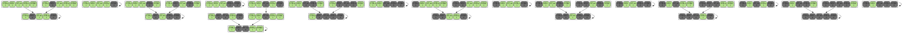
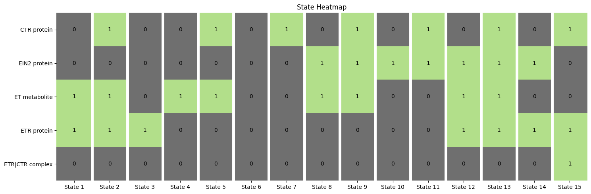
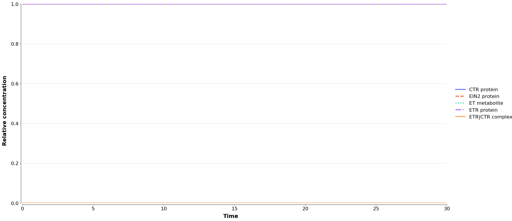
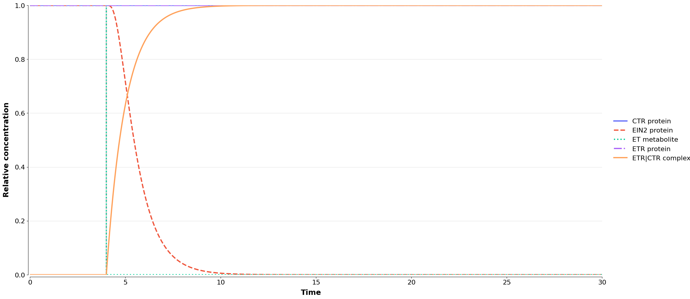

BoolDog basic tutorial
Basic demonstration of BoolDog functionality.
[1]:
from booldog import BoolDogModel
INFO 2026-03-01 14:24:51,783 booldog:<module> BoolDog version: 0.1.0
DEBUG 2026-03-01 14:24:51,784 booldog:<module> Test
Toy example
[2]:
bnet = '''
ETR_CTR, (ETR & CTR) & !ET
EIN2, !ETR_CTR & EIN2
'''
node_names = {
"CTR": "CTR protein",
"EIN2": "EIN2 protein",
"ET": "ET metabolite",
"ETR": "ETR protein",
"ETR_CTR": "ETR|CTR complex"
}
bn = BoolDogModel.from_bnet(bnet, node_names=node_names)
DEBUG 2026-03-01 14:24:51,790 booldog.io:_from_reader Creating BoolDogModel using reader read_bnet
DEBUG 2026-03-01 14:24:51,792 booldog.io.bnet:_get_rules Parsing line: ETR_CTR, (ETR & CTR) & !ET
DEBUG 2026-03-01 14:24:51,792 booldog.io.bnet:_get_rules Parsing line: EIN2, !ETR_CTR & EIN2
DEBUG 2026-03-01 14:24:51,793 booldog.io.bnet:_get_rules Adding node CTR with no rule.
DEBUG 2026-03-01 14:24:51,794 booldog.io.bnet:_get_rules Adding node ETR with no rule.
DEBUG 2026-03-01 14:24:51,794 booldog.io.bnet:_get_rules Adding node ET with no rule.
INFO 2026-03-01 14:24:51,797 booldog.network:__init__ Node 'CTR' has no rule. Assuming 'input' node.
INFO 2026-03-01 14:24:51,798 booldog.network:__init__ Node 'ETR' has no rule. Assuming 'input' node.
INFO 2026-03-01 14:24:51,799 booldog.network:__init__ Node 'ET' has no rule. Assuming 'input' node.
INFO 2026-03-01 14:24:51,804 booldog.network:__init__ Created Network with 5 nodes.
[3]:
bn.nodes
[3]:
{'ETR_CTR': BoolDogNode(name='ETR|CTR complex', rule='(ETR & CTR) & !ET'),
'EIN2': BoolDogNode(name='EIN2 protein', rule='!ETR_CTR & EIN2'),
'CTR': BoolDogNode(name='CTR protein', rule='CTR'),
'ETR': BoolDogNode(name='ETR protein', rule='ETR'),
'ET': BoolDogNode(name='ET metabolite', rule='ET')}
[4]:
bn.get_rule("ETR_CTR")
[4]:
'(ETR & CTR) & !ET'
[5]:
g = bn.to_networkx(as_logic_circuit=True)
DEBUG 2026-03-01 14:24:51,850 booldog.io.circuit:booldog2circuit Processing rule for ETR_CTR: (ETR & CTR) & !ET
DEBUG 2026-03-01 14:24:51,852 booldog.io.circuit:resolve_rule Replace ETR & CTR with and_0
DEBUG 2026-03-01 14:24:51,854 booldog.io.circuit:booldog2circuit Processing rule for EIN2: !ETR_CTR & EIN2
DEBUG 2026-03-01 14:24:51,855 booldog.io.circuit:booldog2circuit Processing rule for CTR: CTR
DEBUG 2026-03-01 14:24:51,856 booldog.io.circuit:booldog2circuit Processing rule for ETR: ETR
DEBUG 2026-03-01 14:24:51,857 booldog.io.circuit:booldog2circuit Processing rule for ET: ET
[6]:
print(bn.to_bnet())
targets, factors
ETR_CTR, (ETR & CTR) & !ET
EIN2, !ETR_CTR & EIN2
CTR, CTR
ETR, ETR
ET, ET
Boolean simulation
State transition graph
[7]:
stg = bn.boolean_simulation()
stg.plot_stg()
[7]:

Stable states
[8]:
steady_states = bn.steady_states()
steady_states.plot_state_space()

Continous simulation
[9]:
bn.steady_states().state_space
[9]:
[{'CTR': 0, 'EIN2': 0, 'ET': 1, 'ETR': 1, 'ETR_CTR': 0},
{'CTR': 1, 'EIN2': 0, 'ET': 1, 'ETR': 1, 'ETR_CTR': 0},
{'CTR': 0, 'EIN2': 0, 'ET': 0, 'ETR': 1, 'ETR_CTR': 0},
{'CTR': 0, 'EIN2': 0, 'ET': 1, 'ETR': 0, 'ETR_CTR': 0},
{'CTR': 1, 'EIN2': 0, 'ET': 1, 'ETR': 0, 'ETR_CTR': 0},
{'CTR': 0, 'EIN2': 0, 'ET': 0, 'ETR': 0, 'ETR_CTR': 0},
{'CTR': 1, 'EIN2': 0, 'ET': 0, 'ETR': 0, 'ETR_CTR': 0},
{'CTR': 0, 'EIN2': 1, 'ET': 1, 'ETR': 0, 'ETR_CTR': 0},
{'CTR': 1, 'EIN2': 1, 'ET': 1, 'ETR': 0, 'ETR_CTR': 0},
{'CTR': 0, 'EIN2': 1, 'ET': 0, 'ETR': 0, 'ETR_CTR': 0},
{'CTR': 1, 'EIN2': 1, 'ET': 0, 'ETR': 0, 'ETR_CTR': 0},
{'CTR': 0, 'EIN2': 1, 'ET': 1, 'ETR': 1, 'ETR_CTR': 0},
{'CTR': 1, 'EIN2': 1, 'ET': 1, 'ETR': 1, 'ETR_CTR': 0},
{'CTR': 0, 'EIN2': 1, 'ET': 0, 'ETR': 1, 'ETR_CTR': 0},
{'CTR': 1, 'EIN2': 0, 'ET': 0, 'ETR': 1, 'ETR_CTR': 1}]
[10]:
# Choose a steady stare to start from
simulation = bn.continuous_simulation(
transform="normalisedhillcube",
initial_state={'CTR': 1, 'EIN2': 1, 'ET': 1, 'ETR': 1, 'ETR_CTR': 0},
)
simulation.plot()
INFO 2026-03-01 14:24:52,355 booldog.continuous.semi_quantitative:continuous_simulation Status: Generating ODE system ...
INFO 2026-03-01 14:24:52,355 booldog.continuous.ode_factory:__init__ Creating ODE system for normalisedhillcube.
DEBUG 2026-03-01 14:24:52,356 booldog.continuous.ode_factory:homologue_b1 ETR_CTR 1
DEBUG 2026-03-01 14:24:52,357 booldog.continuous.ode_factory:homologue_b1 EIN2 1
DEBUG 2026-03-01 14:24:52,358 booldog.continuous.ode_factory:homologue_b1 CTR 1
DEBUG 2026-03-01 14:24:52,359 booldog.continuous.ode_factory:homologue_b1 ETR 1
DEBUG 2026-03-01 14:24:52,360 booldog.continuous.ode_factory:homologue_b1 ET 1
INFO 2026-03-01 14:24:52,361 booldog.continuous.semi_quantitative:continuous_simulation Status: ... done.
INFO 2026-03-01 14:24:52,361 booldog.continuous.semi_quantitative:continuous_simulation Status: Start
INFO 2026-03-01 14:24:52,972 booldog.continuous.semi_quantitative:continuous_simulation Status: End

[10]:
(<Figure size 2000x1000 with 1 Axes>, array([[<Axes: >]], dtype=object))
Continous simulation with an event
[11]:
# Add an event!
simulation = bn.continuous_simulation(
transform="normalisedhillcube",
initial_state={'CTR': 1, 'EIN2': 1, 'ET': 1, 'ETR': 1, 'ETR_CTR': 0},
node_events={'time':4, 'node':'ET', 'value':0},
)
simulation.plot()
INFO 2026-03-01 14:24:53,319 booldog.continuous.semi_quantitative:continuous_simulation Status: Generating ODE system ...
INFO 2026-03-01 14:24:53,320 booldog.continuous.ode_factory:__init__ Creating ODE system for normalisedhillcube.
DEBUG 2026-03-01 14:24:53,321 booldog.continuous.ode_factory:homologue_b1 ETR_CTR 1
DEBUG 2026-03-01 14:24:53,322 booldog.continuous.ode_factory:homologue_b1 EIN2 1
DEBUG 2026-03-01 14:24:53,323 booldog.continuous.ode_factory:homologue_b1 CTR 1
DEBUG 2026-03-01 14:24:53,324 booldog.continuous.ode_factory:homologue_b1 ETR 1
DEBUG 2026-03-01 14:24:53,325 booldog.continuous.ode_factory:homologue_b1 ET 1
INFO 2026-03-01 14:24:53,326 booldog.continuous.semi_quantitative:continuous_simulation Status: ... done.
INFO 2026-03-01 14:24:53,326 booldog.continuous.semi_quantitative:continuous_simulation Status: Start
INFO 2026-03-01 14:24:53,428 booldog.continuous.semi_quantitative:continuous_simulation Status: Event at 4.0:
ET -> 0.00 (duration 0)
INFO 2026-03-01 14:24:53,953 booldog.continuous.semi_quantitative:continuous_simulation Status: End

[11]:
(<Figure size 2000x1000 with 1 Axes>, array([[<Axes: >]], dtype=object))
Save simulation results
[12]:
simulation.export("files/basic_simulation_event.tsv")
WARNING 2026-03-01 14:24:54,312 booldog.utils.misc:file_writable files/basic_simulation_event.tsv already exists and will be overwritten!
INFO 2026-03-01 14:24:54,330 booldog.simulation_result.continuous_result:export Saved simulation results to files/basic_simulation_event.tsv.
[ ]:
[ ]:
[ ]:
[ ]: